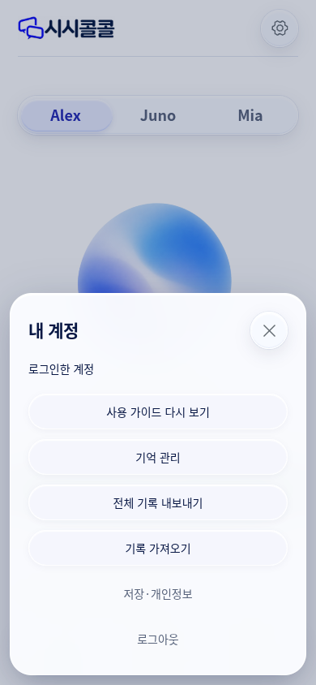
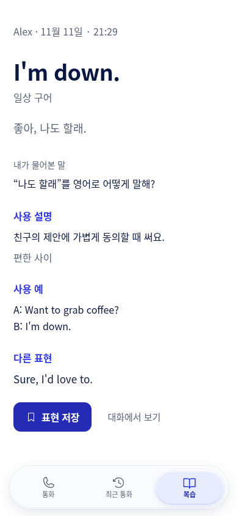
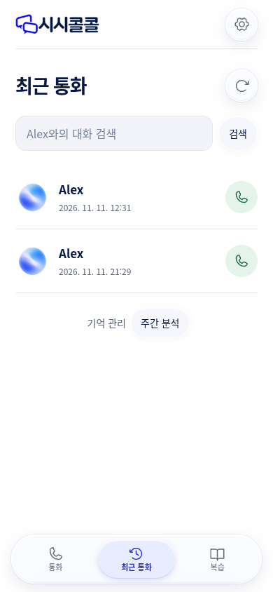
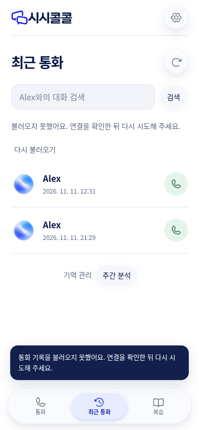
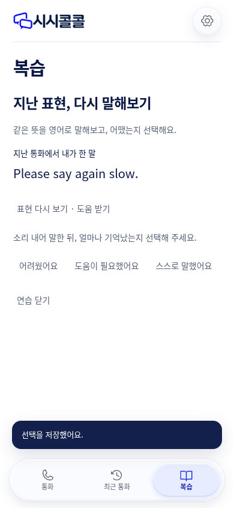
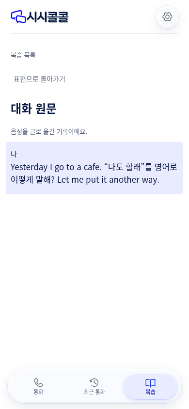

현재 앱 화면 발췌 · 2026. 11. 11. · 로그인 이후는 배포 소스와 같은 로컬 앱의 합성 데이터로 확인했습니다.개선 시안이 아닌 현재 상태의 증거입니다. 원본 이미지는 보정하지 않았습니다.

면과 테두리가 연한 계정 화면에 묻힙니다.

저장 옆의 ‘대화에서 보기’는 동작 단서가 약합니다.

이름·날짜도 상세 열기지만 다시 걸기만 두드러집니다.

오류 설명 아래 ‘다시 불러오기’가 버튼처럼 보이지 않습니다.

도움 받기와 자기평가 선택을 본문과 구분하기 어렵습니다.

‘복습 목록’과 ‘표현으로 돌아가기’가 같은 상세로 갑니다.